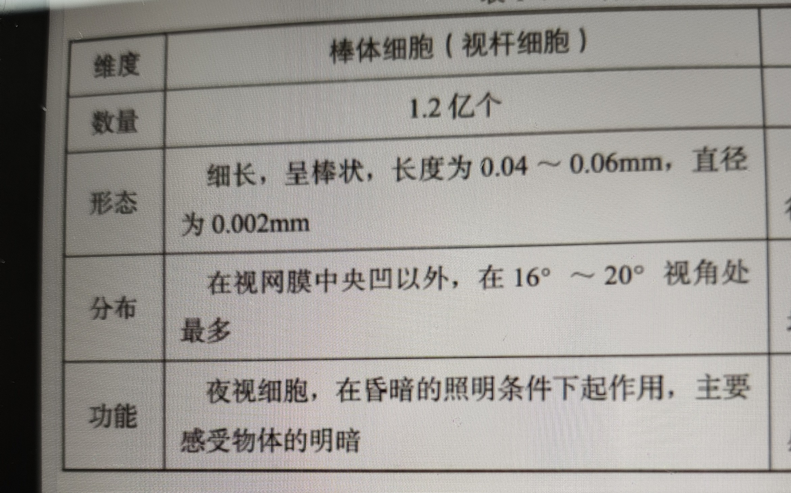

味觉的传导通路
舌面乳突上的味蕾→面神经→孤束核喙侧的味觉核→初级味皮质
初级嗅皮质对探测外界气味的变化很重要
次级嗅皮质对识别气味很重要
敏度
我们在多大程度上可以区分一种感觉通道中的不同刺激
什么是知觉？
知觉是客观事物直接作用于感觉器官而引起的人脑对客观事物整体的反映。有觉察、分辨和确认三种作用。
什么是感觉？
感觉是人的感觉器官将不同的物理能量转化为神经冲动，并在头脑中形成外部世界的特性和属性的主观印象
躯体感觉表征具有可塑性，表现为面积和结构个体经验而改变
人工耳蜗的原理
听力损伤多为听觉感受器耳蜗毛细胞受损，而人工耳蜗能绕过将声音转换为电信号的过程，直接产生电信号刺激听觉神经
nociceptors /疼痛感受器
也称游离神经末梢（free nerve endings）。传递痛觉信息的躯体感受器。
odorant /着嗅剂
通过空气传播导致嗅觉感受器激活的分子。当它被嗅觉系统加工时，它可能会被知觉为有某种气味。比较着味剂（tastant）。
olivary nucleus /橄榄核
位于延髓和脑桥的一组核团，是左右耳听觉信息汇聚的第一个部位。
photoreceptors /感光细胞
视网膜上的特异化细胞。将光能转化为膜电位。感光细胞是视觉系统与外部世界和神经系统之间的接口。人眼有两种感光细胞：视杆细胞和视锥细胞。
rods /视杆细胞
一种感光细胞，对光刺激的阈限比视锥细胞低，因此能在弱光条件下产生视觉。视杆细胞位于视网膜外周，而不是中央凹。许多视杆细胞连接一个神经节细胞。

S2
参见次级躯体感觉皮质（secondary somatosensory cortex）。
tastant /着味剂
能够刺激味觉细胞中的受体以产生味觉的食物分子，比较着嗅剂（odorant）。
superior colliculus /上丘(中脑）
位于中脑的皮质下视觉结构，接收视网膜系统的信息输入，与皮质下和皮质系统存在双向神经连接，在视觉运动加工中具有重要作用，也可能涉及反射性注意定向的抑制过程。比较下丘（inferior colliculus）。
extrastriate visual areas /纹外视觉区
位于纹状皮质（BA17区，即初级视皮质）以外的视觉区。由于直接或间接接收来自初级视皮质的输入，因此也被认为是次级视觉区。
homunculus /侏儒
参见初级躯体感觉皮质（primary somatosensory cortex）。
multisensory integration /多感觉整合
对来自多个感觉通道的信息予以整合。例如，看某人说话需要把听觉和视觉信息整合起来。
primary auditory cortex (A1) /初级听皮质（A1区）
负责初始听觉信息加工的脑区。
synesthesia /联觉
一种感觉的刺激会产生另一种感觉的现象
area MT/MT 区
也称 V5 区 (area V5), 位于视皮质，具有对运动高度敏感的细胞。这一区域属于视觉加工背侧通路的一部分，被认为参与运动知觉和表征空间信息。
cochlear nuclei / 耳蜗核
耳蜗神经突触的髓质核。
cortical plasticity / 皮质可塑性
大脑在解剖结构和功能上自我重组的能力。
cortical visual areas / 皮质视觉区
根据明确的视网膜皮质映射图而确定的视皮质区，专门表征特定种类的激信息，并且通过整合过程为基于视觉的行动提供神经基础。参见纹外视觉区 (extrastriate visual area)。
LGN
参见外侧膝状体（lateral geniculate nucleus）。
proprioception /本体感觉
对身体某部分（如四肢）位置的察觉，由连接肌肉和肌腱的特异性神经细胞提供信息。
S1
参见初级躯体感觉皮质（primary somatosensory cortex）。
saccades /眼跳
使注视点从一点移动到另一点的眼球快速运动。一个眼跳会持续20-100毫秒。
V1
参见初级视皮质（primary visual cortex）。
area V4/V4 区
视皮质的一个区域，具有加工颜色信息的细胞。
primary gustatory cortex /初级味皮质
负责初始味觉加工的脑区，位于脑岛和岛盖。
tonotopic map /频率拓扑图
将不同声音频率映射到沿耳蜗管分布的毛细胞上，也映射到听皮质上，相邻的频率表示在相邻的空间位置上。
cones / 视锥细胞
感光细胞，主要集中于视网膜中央凹，能够提供比视杆细胞更高的清晰度，但也需要更强的光照激活。视锥细胞能比视杆细胞更快地补充色素，从而提供更好的日视觉。视锥细胞有三种类型，每一种对特定波长的光更敏感，从而调节颜色视觉。
inferior colliculus /下丘（中脑）
中脑的一部分，参与听觉信息加工。比较上丘（superior colliculus）。
primary somatosensory cortex (SI) /初级躯体感觉皮质（S1区）
负责初始躯体感觉加工的皮质，包括BA1区、BA2区和BA3区。这个区域具有与躯体相对应的“躯体感觉侏儒”。比较次级躯体感觉皮质（secondary somatosensory cortex）。
pyriform cortex /梨状皮质
参见初级嗅皮质（primary olfactory cortex）。
retina /视网膜
眼球后部表面的神经元层，包括光感受体（对光做出反应的细胞）和视神经节细胞（其轴突组成视神经）。
akinetopsia / 运动盲
因中枢神经系统损伤而导致的一种选择性运动知觉障碍。运动盲病人无法以平滑的方式知觉一个物体或自身的运动。严重时，病人只能靠物体在环境中相对位置的变化来推测运动，好像是通过一系列连续的静态快照来建构动态过程。
auditory nerve / 听神经
参见耳蜗神经 (cochlear nerve)。
chemical senses / 化学感觉
两种由环境分子激活的感觉，即味觉和嗅觉。
ganglion cell /神经节细胞
视网膜上的一种神经元，接收来自视网膜感光细胞（视杆细胞和视锥细胞）和中间细胞的输入，并将轴突发送到丘脑和其他皮质下结构。
glomeruli (单数: glomerulus)/嗅小体
嗅球的神经元。
interaural time /双耳时间差
指一个声音抵达双耳的时间差。这种信息在听觉通道的多个水平上得到加工，提供了对声源定位的重要线索。
primary olfactory cortex /初级嗅皮质
也称梨状皮质（pyriform cortex），负责初始嗅觉加工的皮质，位于额叶和颞叶的腹侧联合部，靠近边缘皮质。
retinotopic map /视网膜皮质映射图
大脑中一种空间关系的表征。在一个视网膜皮质映射图中，通过维持着某种有序的空间关系，从而能够在以眼睛为基础的参考系中反映环境的空间特性。例如，相对于注视中心，初级视皮质包含一个对侧空间的视网膜皮质映射图。研究者在大脑皮质和皮质下区域还确定了多重视网膜皮质映射图。
cochlear nerve / 耳蜗神经
也称听神经（auditory nerve）。耳蜗前庭神经（第八对脑神经）的一个分支，将听觉信息从与耳蜗毛细胞的突触传递到脑干的耳蜗核。
free nerve endings /自由神经末梢
参见疼痛感受器（nociceptors）。
receptive field /感受野
如在某一外部空间区域中呈现的某个刺激可以激活某个细胞，则这个区域被称为该细胞的感受野。例如，视皮质细胞会对出现在某一限定空间区域的刺激做出反应。除了空间位置，细胞也可选择性地对其他特征（如颜色和形状）做出反应。听皮质细胞也具有感受野。在感受野内有声音刺激出现时，对应细胞的放电率会增加。
secondary somatosensory cortex (S2) /次级躯体感觉区（S2区）
大脑接收初级躯体感觉区的输入并进行更高水平躯体感觉信息加工的区域。
fovea /中央凹
视网膜的中心区域，其中密集的视锥细胞提供高分辨率的视觉信息。
area V5
参见 MT 区 (area MT).
lateral geniculate nucleus (LGN)/外侧膝状体
丘脑核团之一，视神经束的主要中转站。经外侧膝状体的神经信号主要传入初级视皮质（BA17区）。比较内侧膝状体。
primary visual cortex (V1) /初级视皮质（V1区）
负责初始视觉加工的脑区，位于枕叶最后端，即BA17区。